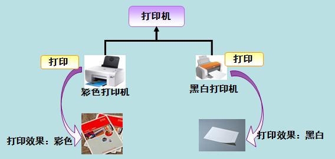

java是一种面向对象语言，万物对象化
只写了一部分，如下
- 对象和类
- 多态
- 继承
- 封装
- 抽象

java是一种面向对象语言，万物对象化
只写了一部分，如下
关于String的用法
因为是写的菜鸟上面的笔记，所以可以直接看菜鸟教程，我写的就不是很完整
就是可以定义自己想定义的类型
万物对象化，官方链接菜鸟教程
对象：对象是类的一个实例（对象不是找个女朋友），有状态和行为。例如，一条狗是一个对象，它的状态有：颜色、名字、品种；行为有：摇尾巴、叫、吃等。
类：类是一个模板，它描述一类对象的行为和状态。
多态是同一个行为具有多个不同表现形式或形态的能力。
多态就是同一个接口，使用不同的实例而执行不同操作，如图所示：

多态性是对象多种表现形式的体现。
多态的优点
1. 消除类型之间的耦合关系
2. 可替换性
3. 可扩充性
4. 接口性
5. 灵活性
6. 简化性
多态存在的三个必要条件
继承
重写
父类引用指向子类对象
比如：
Parent p = new Child();
继承是java面向对象编程技术的一块基石，因为它允许创建分等级层次的类。
继承就是子类继承父类的特征和行为，使得子类对象（实例）具有父类的实例域和方法，或子类从父类继承方法，使得子类具有父类相同的行为。
生活中的继承：

兔子和羊属于食草动物类，狮子和豹属于食肉动物类。
食草动物和食肉动物又是属于动物类。
所以继承需要符合的关系是：is-a，父类更通用，子类更具体。
虽然食草动物和食肉动物都是属于动物，但是两者的属性和行为上有差别，所以子类会具有父类的一般特性也会具有自身的特性。
类的继承格式
在 Java 中通过 extends 关键字可以申明一个类是从另外一个类继承而来的，一般形式如下：
class 父类 {
}
class 子类 extends 父类 {
}
在面向对象程式设计方法中，封装（英语：Encapsulation）是指一种将抽象性函式接口的实现细节部分包装、隐藏起来的方法。
封装可以被认为是一个保护屏障，防止该类的代码和数据被外部类定义的代码随机访问。
要访问该类的代码和数据，必须通过严格的接口控制。
封装最主要的功能在于我们能修改自己的实现代码，而不用修改那些调用我们代码的程序片段。
适当的封装可以让程式码更容易理解与维护，也加强了程式码的安全性。
封装的优点
1. 良好的封装能够减少耦合。
2. 类内部的结构可以自由修改。
3. 可以对成员变量进行更精确的控制。
4. 隐藏信息，实现细节。
就是用private私有化
在面向对象的概念中，所有的对象都是通过类来描绘的，但是反过来，并不是所有的类都是用来描绘对象的，如果一个类中没有包含足够的信息来描绘一个具体的对象，这样的类就是抽象类。
抽象类除了不能实例化对象之外，类的其它功能依然存在，成员变量、成员方法和构造方法的访问方式和普通类一样。
由于抽象类不能实例化对象，所以抽象类必须被继承，才能被使用。也是因为这个原因，通常在设计阶段决定要不要设计抽象类。
父类包含了子类集合的常见的方法，但是由于父类本身是抽象的，所以不能使用这些方法。
在Java中抽象类表示的是一种继承关系，一个类只能继承一个抽象类，而一个类却可以实现多个接口。
抽象方法
如果你想设计这样一个类，该类包含一个特别的成员方法，该方法的具体实现由它的子类确定，那么你可以在父类中声明该方法为抽象方法。
Abstract 关键字同样可以用来声明抽象方法，抽象方法只包含一个方法名，而没有方法体。
抽象方法没有定义，方法名后面直接跟一个分号，而不是花括号。
public abstract class Employee
{
private String name;
private String address;
private int number;
public abstract double computePay();
//其余代码
}
声明抽象方法会造成以下两个结果：
/* 文件名 : Salary.java */
public class Salary extends Employee
{
private double salary; // Annual salary
public double computePay()
{
System.out.println("Computing salary pay for " + getName());
return salary/52;
}
//其余代码
}
这是菜鸟笔记，官方链接String
StringBuffer&StringBuilder笔记，官方链接StringBuffer&StringBuilder
StringBuffer 和 StringBuilder 类
当对字符串进行修改的时候，需要使用 StringBuffer 和 StringBuilder 类。
和 String 类不同的是，StringBuffer 和 StringBuilder 类的对象能够被多次的修改，并且不产生新的未使用对象。
StringBuilder 类在 Java 5 中被提出，它和 StringBuffer 之间的最大不同在于 StringBuilder 的方法不是线程安全的（不能同步访问）。
由于 StringBuilder 相较于 StringBuffer 有速度优势，所以多数情况下建议使用 StringBuilder 类。然而在应用程序要求线程安全的情况下，则必须使用 StringBuffer
类。
StringBuffer 方法
用的还是菜鸟教程，官方链接泛型
Java 泛型（generics）是 JDK 5 中引入的一个新特性, 泛型提供了编译时类型安全检测机制，该机制允许程序员在编译时检测到非法的类型。
泛型的本质是参数化类型，也就是说所操作的数据类型被指定为一个参数。
假定我们有这样一个需求：写一个排序方法，能够对整型数组、字符串数组甚至其他任何类型的数组进行排序，该如何实现？
答案是可以使用 Java 泛型。
使用 Java 泛型的概念，我们可以写一个泛型方法来对一个对象数组排序。然后，调用该泛型方法来对整型数组、浮点数数组、字符串数组等进行排序。
你可以写一个泛型方法，该方法在调用时可以接收不同类型的参数。根据传递给泛型方法的参数类型，编译器适当地处理每一个方法调用。
下面是定义泛型方法的规则：
public class GenericMethodTest
{
// 泛型方法 printArray
public static < E > void printArray( E[] inputArray )
{
// 输出数组元素
for ( E element : inputArray ){
System.out.printf( "%s ", element );
}
System.out.println();
}
public static void main( String args[] )
{
// 创建不同类型数组： Integer, Double 和 Character
Integer[] intArray = { 1, 2, 3, 4, 5 };
Double[] doubleArray = { 1.1, 2.2, 3.3, 4.4 };
Character[] charArray = { 'H', 'E', 'L', 'L', 'O' };
System.out.println( "整型数组元素为:" );
printArray( intArray ); // 传递一个整型数组
System.out.println( "\n双精度型数组元素为:" );
printArray( doubleArray ); // 传递一个双精度型数组
System.out.println( "\n字符型数组元素为:" );
printArray( charArray ); // 传递一个字符型数组
}
}
输出
整型数组元素为:
1 2 3 4 5
双精度型数组元素为:
1.1 2.2 3.3 4.4
字符型数组元素为:
H E L L O
泛型类的声明和非泛型类的声明类似，除了在类名后面添加了类型参数声明部分。
和泛型方法一样，泛型类的类型参数声明部分也包含一个或多个类型参数，参数间用逗号隔开。一个泛型参数，也被称为一个类型变量，是用于指定一个泛型类型名称的标识符。因为他们接受一个或多个参数，这些类被称为参数化的类或参数化的类型。
实例
整型值为 :10
字符串为 :菜鸟教程
1、类型通配符一般是使用?代替具体的类型参数。例如 List 在逻辑上是List
实例
data :icon
data :18
data :314
2、类型通配符上限通过形如List来定义，如此定义就是通配符泛型值接受Number及其下层子类类型。
实例
data :18
data :314
3、类型通配符下限通过形如 List来定义，表示类型只能接受Number及其三层父类类型，如 Object 类型的实例。